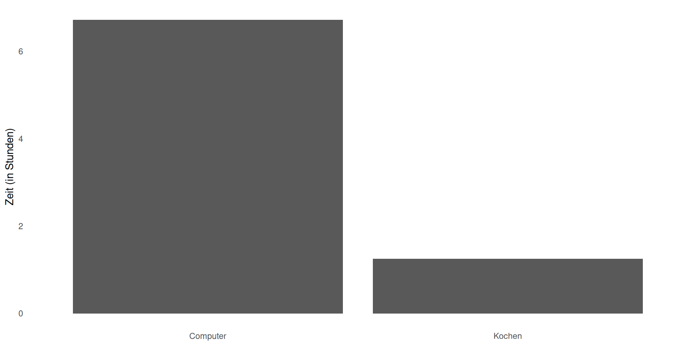

Open-Source KI
Und warum das so wichtig ist
REZEPT
- 2 Einheiten Compound-XJ7 (15 CHF/Flasche, nur unsere Marke) hinzufügen.
- In Model-Pro-Pan-2024 bei Einstellung „MEDIUM” erhitzen.
- Mit zertifiziertem Rührgerät (separat erhältlich) umrühren.
- Flavor-Packet-B hinzufügen, wenn die Kontrollleuchte grün leuchtet.
⚠ WARNUNG:
- Ersatzprodukte führen zum Erlöschen der Garantie
- Das Rezept funktioniert nicht mehr, wenn Zutaten nicht mehr erhältlich sind
- Versuchen Sie nicht, die Chemie zu verstehen
- Model-Pro-Pan-2024 wird nächstes Jahr eingestellt; Upgrade erforderlich
OFFENES REZEPT
Zwiebeln in Öl glasig dünsten.
Knoblauch hinzufügen, 30 Sekunden lang anbraten.
Tomaten hinzufügen, 20 Minuten köcheln lassen.
HINWEISE:
- Keine Zwiebeln? Verwenden Sie Schalotten oder Lauch.
- Olivenöl oder Butter sind beide geeignet.
- Verwenden Sie eine handelsübliche, vorzugsweise teflonbeschichtete Bratpfanne
Kochen vs. Computer
Täglich investierte Zeit: Kochen vs. Computer Ratnaweera et al (2025), n = 1
Déjà vu
Das Muster wiederholt sich
- Wir verwenden keine Textverarbeitungsprogramme, wir verwenden Microsoft Office
- Wir verwenden keine Messenger, sondern WhatsApp
- Wir verwenden kein GIS, sondern ArcGIS
- Werden wir KI verwenden oder werden wirChatGPTverwenden?
Die Problematik
Sobald Sie in ChatGPT Plus investiert haben…
- die Benutzeroberfläche kennengelernt haben
- Ihre Eingabeaufforderungen in deren System erstellt haben
- Ihre Daten bei ihnen gespeichert haben
- →werden die Wechselkosten ENORM
Vendor Lock-In
REZEPT
- 2 Einheiten Compound-XJ7 (15 CHF/Flasche, nur unsere Marke) hinzufügen.
- In Model-Pro-Pan-2024 bei Einstellung “MEDIUM” erhitzen.
- Mit zertifiziertem Rührgerät (separat erhältlich) umrühren.
- Flavor-Packet-B hinzufügen, wenn die Kontrollleuchte grün leuchtet.
⚠ WARNUNG:
- Ersatzprodukte führen zum Erlöschen der Garantie
- Das Rezept funktioniert nicht mehr, wenn Zutaten nicht mehr erhältlich sind
- Versuchen Sie nicht, die Chemie zu verstehen
- Model-Pro-Pan-2024 wird nächstes Jahr eingestellt; Upgrade erforderlich
Warum ist das ein Problem?
Aber nicht jeder kann ein Computerexperte sein
Drei Ebenen
Schnittstellenschicht „ChatGPT oder MS Copilot”
Implementierungsformate , Standards usw.
Technologie Die grundlegende Fähigkeit
Am Scheideweg
OpenSource & LLM
„Offenheit” ist ein Spektrum
offener ↑
- Vollständig offen (Gewichte ✔ Code ✔ Daten ✔)
- Offener Code (Gewichte ✔ Code ✔ Daten ✕)
- Offene Gewichte (Gewichte ✔ Code ✕ Daten ✕)
- Proprietär (Gewichte ✕ Code ✕ Daten ✕)
geschlossener ↓
Ok, wie funktioniert das?
Praktische Demo
Schritt 1: Software installieren
Wir benötigen eine Software, mit der Siedas Modell auf Ihrem Rechner ausführen können.
- Lädt Modelldaten herunter
- Verwaltet Speicher und Verarbeitung
- Stellt eine Schnittstelle bereit
Beliebte Optionen
- Ollama (ollama.ai)
- LM Studio (lmstudio.ai)
- GPT4All (gpt4all.io)
- Jan (jan.ai)
Schritt 2: Modell auswählen und herunterladen
Modelle unterscheiden sich hinsichtlich:
- Größe(1 GB bis 100 GB+)
- Fähigkeiten(allgemeiner Chat, Programmierung, logisches Denken)
- Sprache(mehrsprachig vs. englischorientiert)
Beginnen Sie mit einem kleinen, universell einsetzbaren Modell
Schritt 3: Führen Sie Ihre erste Abfrage aus
Jetzt können Siemit dem Modellinteragieren
.
- Starten Sie das Modell/den Server
- . Senden Sie ihm eine Eingabeaufforderung.
- Erhalten Sie eine Antwort.
Das
war’s schon!Sie führen KI lokal aus.
Die drei Verbesserungen
RAG
Retrieval Augmented Generation
Geben Sie LLM Zugriff auf IHRE Dokumente
Beispiel: IUNR-Kursmaterialien, Forschungsarbeiten
MCPs
Modellkontextprotokoll
Verbinden Sie LLM mit Ihren Tools
Beispiel: Felddaten, GIS, E-Mail, Kalender
Personas
Systemaufforderungen
Gestalten Sie das Verhalten von LLM
Beispiel: „Lehrassistent für Umweltwissenschaften”
Warum lokale LLMs für den Unterricht sinnvoll sind
- Studierendendaten sindsensibel(DSGVO, Datenschutz)
- Sich wiederholende Aufgaben(Benotung, Feedback)
- MaßgeschneiderteKursmaterialien(RAG)
- Einmalige Einrichtung,dauerhafter Nutzen
- Keine Kosten pro Abfrage
Übergang
Okay, was können Siedamitkonkret machen?
3. ANWENDUNGSFÄLLE + BENCHMARKS
Was können lokale LLMs für den Unterricht leisten?
Anwendungsfall 1: Übungsfragen generieren
Eingabe:Vorlesungsfolien oder Kapitel aus einem Lehrbuch
Ausgabe:10 Multiple-Choice-Fragen mit Erläuterungen
Warum lokal:Kursmaterialien sind oft urheberrechtlich geschützt/sensibel
Benchmark:
ChatGPT-4: ⭐⭐⭐⭐⭐
Local DeepSeek-r1: ⭐⭐⭐⭐⭐
Privacy: Local WINS | Cost: Local WINSAnwendungsfall 2: Feedback zum Schreiben von Schülern
Eingabe:Aufsatz oder Bericht eines Schülers
Ausgabe:Konstruktives Feedback zu Struktur, Argumentation und Klarheit
Warum lokal:Die Arbeiten der Schüler sind vertraulich
Benchmark:
ChatGPT-4: ⭐⭐⭐⭐⭐
Local DeepSeek-r1: ⭐⭐⭐⭐
Privacy: Local WINS | Cost: Local WINSAnwendungsfall 3: Zusammenfassung von Forschungsergebnissen
Input:30-seitige Forschungsarbeit
Output:1-seitige Zusammenfassung für Studierende
Warum lokal:Kann viele Arbeiten verarbeiten, keine API-Kosten
Benchmark:
ChatGPT-4: ⭐⭐⭐⭐⭐
Local DeepSeek-r1: ⭐⭐⭐⭐⭐
Privacy: Local WINS | Cost: Local WINSWeitere Anwendungsfälle
Weitere Aufgaben, die sich gut lokal umsetzen lassen:
- Übersetzen Sie technische Inhalte in verschiedene Lesestufen
- Erstellen Sie interaktive Studienführer mit RAG
- Erstellen von Bewertungsrubriken
- Beantwortung von Fragen der Studierenden zu Kursmaterialien
Die wichtigste Erkenntnis
- Lokale Modelle sindfür Lehraufgaben„gut genug“
- Die Qualitätslücke hat sichdrastisch geschlossen
- Der Datenschutzvorteil istenorm
- Kosten: Einmalige Anschaffung der Hardware, dannunbegrenzte Nutzung
Übergang zur Demo
Sehen wir uns das in Aktion an
4. LIVE-DEMO
Demo-Einführung
Sehen wir uns das in Aktion an
- Ich werde sowohl ChatGPT als auch das lokale Ollama ausführen
- SIE geben mir eine Lehr-Aufgabe
- Wir vergleichen die Ergebnisse
Demo-Einrichtung
[LIVE-DEMO-BILDSCHIRM]
Demo-Nachbesprechung
Gleiche Funktionen, unterschiedliche Backends
Das eine können Sie kontrollieren, das andere nicht
Beide eignen sich für Lehraufgaben
5. WARUM OPEN SOURCE WICHTIG IST
Warum Kontrolle wichtig ist
Zwei Mal, als Sie betrogen wurden
Beispiel 1: WhatsApp-Leck
- Milliarden von Telefonnummern offengelegt
- „Sie haben ihnen Ihre Daten anvertraut“
- Jeder nutzt es, persönliche Interessen
Beispiel 2: Windows 10 Veralterung
- Hardware durch Softwareentscheidung „veraltet“
- Umweltverschmutzung, E-Müll-Krise
- Erzwungene Upgrades, keine Wahl
Das Lock-in-Muster
Cognitive Lock-in
(I only know THIS)
╱│╲
╱ │ ╲
Technical│ │ Institutional
(Format) │ │ (Everyone uses it)des Vaters + globale Gerechtigkeit

„Das war schon immer ein wichtiger Punkt – Lizenzkosten schließen ganze Regionen aus.“
Open Source = globale Gerechtigkeit
Die Entscheidung für KI ist JETZT
- Werden in 2–3 Jahren alle wie bei WhatsApp an ChatGPT gebunden sein?
- Oder werden wir Alternativen bewahren?
Dieses Fenster bleibt nicht für immer offen
Gute Nachricht:Offene Modelle gibt es JETZT
Rezept-Rückruf
Erinnern Sie sich an das firmeneigene Rezept?
Würden Sie das beim Kochen akzeptieren?
Warum akzeptieren Sie es dann für KI?
6. INTERAKTIVER MOMENT
Ihre Anwendungsfälle
Wofür würden SIE lokale LLMs in Ihrem Unterricht einsetzen?
Wo bist du gefangen?
Welche Tools scheinen am schwersten zu überwinden zu sein?
7. ABSCHLUSS: Die Einladung
Zurück zu „Fork in the Road“
Wir haben mit einer Entscheidung begonnen
Wird die KI uns beherrschen oder beherrschen wir die KI?
Sie haben Optionen
- Es gibt Modelle mit offenem Gewicht
- Die Hardware ist leistungsfähig genug (sogar Laptops)
- Die Tools werden immer ausgereifter (Ollama, LM Studio)
- Die Community wächst
SIE können das schaffen
Gehen Sie auf Einwände ein
„Ich habe keine Zeit, das zu lernen!“
- Ja, anfängliche Investitionen sind erforderlich
- Aber: Es zahlt sich mit der Zeit aus
- Und: Sie sind nicht mehr verwundbar
Rückruf zum Thema Kochen: Es lohnt sich, kochen zu lernen vs. proprietäre Rezepte
Fangen Sie klein an
Probieren Sie diesen Monat EINE Sache aus:
- Installieren Sie Ollama und führen Sie ein Modell aus
- Erstellen Sie lokal einen Satz von Prüfungsfragen
- Testen Sie ein lokales LLM zum Zusammenfassen
- Entdecken Sie LM Studio oder ähnliche Tools
Sie müssen nicht alles auf einmal umstellen
Ressourcen & Dankeschön
Kontaktdaten des GrüentAI-Teams
- Wir arbeiten daran, um zu lehren
- Wir stehen Ihnen als Ressource zur Verfügung
- Wenden Sie sich bei Fragen an uns
Vielen Dank